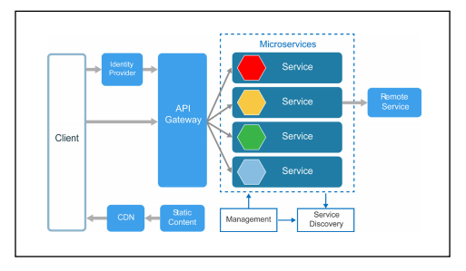
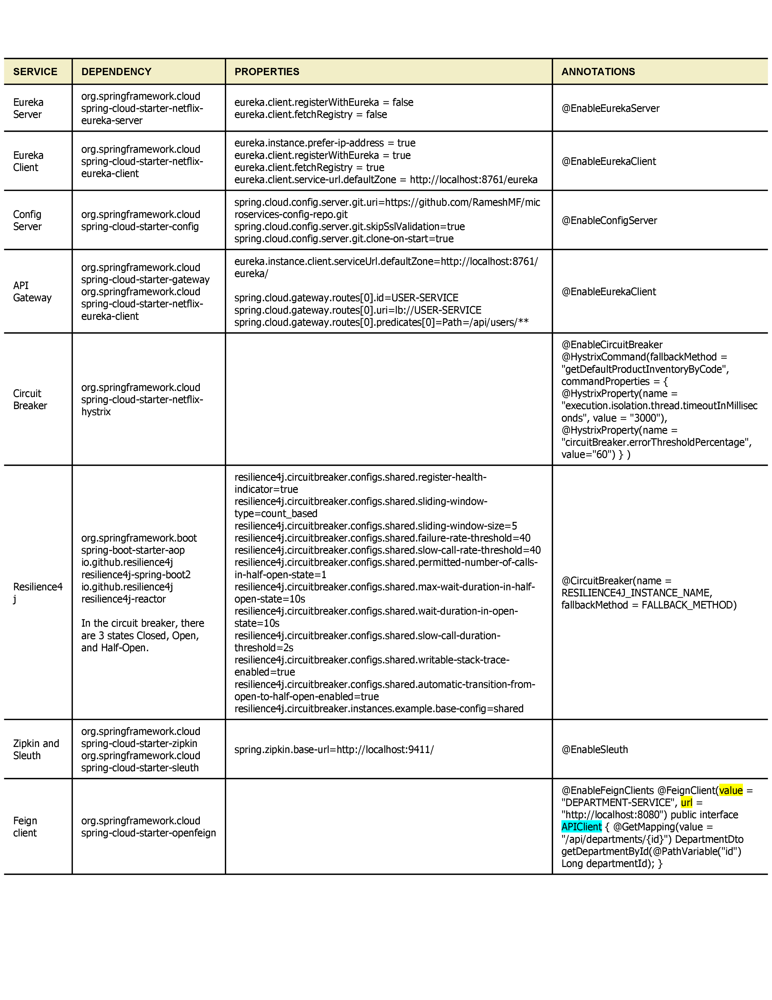

In this tutorial, we will discuss how to create a typical microservices architecture using Spring boot and Spring cloud.
Spring Boot is a very popular Java framework for building Restful web services and microservices. The main goal of Spring Boot is to quickly create Spring-based applications without requiring developers to write the same boilerplate configuration again and again.Spring Cloud provides various tools or modules for developers to build common design patterns to solve different infrastructural concerns in Microservices projects and focus on their main business problems.
In the Java community, Spring Boot and Spring Cloud become a de-facto standard for
building microservices architecture.
Here is what a typical microservice architecture looks like. For example, consider this microservice architecture for a simple shopping cart application. It has different services like product service, inventory service, and stock service, and these are the independent and loosely coupled services in the microservices projects. Each microservice has its own database. For example, product service has its own database, inventory service has its own database, and stock service has its own database.
In the microservices project, all the microservices are loosely coupled. So loosely coupled, meaning all the services in a microservices project are independent of each other and each microservice should be developed independently and each microservice should be deployed independently and each microservice should be scaled independently.
So basically Microservice following characteristics:
Well, there are two types of communication styles. One is synchronous and another is asynchronous.
In the case of synchronous, we can use the HTTP protocol to make an HTTP request from one microservice to the microservice.
And in the case of asynchronous communication, we have to use a message broker for asynchronous communication between multiple microservices. For example, we can use RabbitMQ or Apache Kafka as a message broker in order to make an asynchronous communication between multiple microservices and each microservice in a microservices project can expose REST APIs.
What are Microservices or Microservices Architecture?
Well, a microservice architecture enables large teams to build scalable applications that are composed of many loosely coupled services.Here is what a typical microservice architecture looks like. For example, consider this microservice architecture for a simple shopping cart application. It has different services like product service, inventory service, and stock service, and these are the independent and loosely coupled services in the microservices projects. Each microservice has its own database. For example, product service has its own database, inventory service has its own database, and stock service has its own database.
In the microservices project, all the microservices are loosely coupled. So loosely coupled, meaning all the services in a microservices project are independent of each other and each microservice should be developed independently and each microservice should be deployed independently and each microservice should be scaled independently.
So basically Microservice following characteristics:
- Each microservice can have its own database.
- Each microservice should be developed independently
- Each microservice should be deployed independently
- Each microservice should be scaled independently
Microservices Architecture using Spring Boot and Spring Cloud
Well, we are going to use the Employee Management Project as an example to create a microservices architecture.
Well, you can take any example of any project. For example, you can take an
e-commerce application or you can take any healthcare domain-related application. So you
can take any project as an example, but follow the same steps to create a microservice
architecture using Spring Boot and Spring Cloud. Core Microservices
Consider we have developed three core backend Spring boot microservices such as employee service, department service, and organization service, and all these three microservices have their own databases. You can use a relational database or NoSQL database as a database for these microservices. So whenever you create a microservice in your project, make sure that each microservice should have its own database. All right.Microservices Communication
Once we build these 3 microservices. Next, we'll see how these microservices communicate with each other. Well, there are different ways to make a REST API call from one microservice to another Microservice. For example, we can use a RestTemplate or WebClient or Spring cloud-provided open feign library. All right.Well, there are two types of communication styles. One is synchronous and another is asynchronous.
In the case of synchronous, we can use the HTTP protocol to make an HTTP request from one microservice to the microservice.
And in the case of asynchronous communication, we have to use a message broker for asynchronous communication between multiple microservices. For example, we can use RabbitMQ or Apache Kafka as a message broker in order to make an asynchronous communication between multiple microservices and each microservice in a microservices project can expose REST APIs.
Well, Spring Cloud provides a Spring
Cloud Netflix Eureka Based Service Registry module that we can use to implement
service registry and discovery patterns in our microservices project. Well, service
Registry and discovery is a really essential pattern that we can use to avoid hard
coding hostnames and ports.
Config-Server to Externalize the Configurations
Next, we will implement a config server to externalize the configurations of all these three microservices into a central place which is the git repository.Well, Spring cloud provides a Spring cloud config module that we can use to implement a
config server to externalize the configuration files of all these three microservices
into a central place. We are going to use the git repository as storage for the config
server.
Well, Spring Cloud provides Spring Cloud Gateway module to implement API gateway patterns in a microservices architecture.
Well, along with Spring Cloud Sleuth, we'll also use Zipkin to visualize the tracing log information in a user interface. Well, Zipkin provides a user interface to track and trace information through web applications.
So this circuit breaker pattern helps the employee service to avoid continuous calls to the department service Whenever department service is done and this circuit breaker pattern will help employee service to return some default response back to the API Gateway and the API Gateway will send that default response to the client.
All right. So this is a simple microservices architecture using Spring Boot and Spring Cloud.
API Gateway Pattern
Well, once we know how to use the config server to externalize the configuration
files. Next, we have to implement an API gateway.
Well, API Gateway plays a very important role in our microservices architecture. So
whenever a client wants to make a call to different microservices, the client has to
remember the host names and ports of all these microservices. So there should be a
solution where a client can send a request to the central component so that is where
the API gateway comes into the picture. So whenever a client sends a request to the
backend microservices, then the client has to send a request to the API gateway
first, and then the API gateway based on the routing rules will route that request
to the appropriate microservice. So this is how the API gateway plays an important
role in a microservices architecture.
Well, Spring Cloud provides Spring Cloud Gateway module to implement API gateway patterns in a microservices architecture.
Distributed Tracing
Next, once you know how to implement an API gateway in a microservices project, next you can implement distributed tracing in a microservices architecture. Well, Spring Cloud provides a Spring Cloud sleuth module, which we can use to implement distributed tracing in our microservices project.Well, along with Spring Cloud Sleuth, we'll also use Zipkin to visualize the tracing log information in a user interface. Well, Zipkin provides a user interface to track and trace information through web applications.
React Front Service
Next, you can use React/Angular to create a client-side service that will make a call to backend microservices.Circuit Breaker Pattern
Next, you can implement a circuit breaker pattern in an employee service because the employee service is internally calling department service, and let's say due to some reason, department service is down then employee service won't get a response from the department server, isn't it? And then again, employee service will send an internal server error to the API gateway and then API Gateway will send that response back to the client. All right. So in order to avoid this kind of issue, we can use a circuit breaker pattern.So this circuit breaker pattern helps the employee service to avoid continuous calls to the department service Whenever department service is done and this circuit breaker pattern will help employee service to return some default response back to the API Gateway and the API Gateway will send that default response to the client.
All right. So this is a simple microservices architecture using Spring Boot and Spring Cloud.
Microservice Cheat Sheet
Table for Microservice all services
| Service | Dependency | Properties | Annotations |
|---|---|---|---|
| Eureka Server |
|
eureka.client.registerWithEureka = false eureka.client.fetchRegistry = false |
@EnableEurekaServer |
| Eureka Client |
|
eureka.instance.prefer-ip-address =
true eureka.client.registerWithEureka = true eureka.client.fetchRegistry = true eureka.client.service-url.defaultZone = http://localhost:8761/eureka |
@EnableEurekaClient |
| Config Server |
|
spring.cloud.config.server.git.uri=https://github.com/RameshMF/microservices-config-repo.git spring.cloud.config.server.git.skipSslValidation=true spring.cloud.config.server.git.clone-on-start=true |
@EnableConfigServer |
| API Gateway |
|
eureka.instance.client.serviceUrl.defaultZone=http://localhost:8761/eureka/ spring.cloud.gateway.routes[0].id=USER-SERVICE spring.cloud.gateway.routes[0].uri=lb://USER-SERVICE spring.cloud.gateway.routes[0].predicates[0]=Path=/api/users/** | @EnableEurekaClient |
| Circuit Breaker |
|
@EnableCircuitBreaker @HystrixCommand(fallbackMethod = "getDefaultProductInventoryByCode", commandProperties = { @HystrixProperty(name = "execution.isolation.thread.timeoutInMilliseconds", value = "3000"), @HystrixProperty(name = "circuitBreaker.errorThresholdPercentage", value="60") } ) | |
| Resilience4j |
In the circuit breaker, there are 3 states Closed, Open, and Half-Open. |
resilience4j.circuitbreaker.configs.shared.register-health-indicator=true resilience4j.circuitbreaker.configs.shared.sliding-window-type=count_based resilience4j.circuitbreaker.configs.shared.sliding-window-size=5 resilience4j.circuitbreaker.configs.shared.failure-rate-threshold=40 resilience4j.circuitbreaker.configs.shared.slow-call-rate-threshold=40 resilience4j.circuitbreaker.configs.shared.permitted-number-of-calls-in-half-open-state=1 resilience4j.circuitbreaker.configs.shared.max-wait-duration-in-half-open-state=10s resilience4j.circuitbreaker.configs.shared.wait-duration-in-open-state=10s resilience4j.circuitbreaker.configs.shared.slow-call-duration-threshold=2s resilience4j.circuitbreaker.configs.shared.writable-stack-trace-enabled=true resilience4j.circuitbreaker.configs.shared.automatic-transition-from-open-to-half-open-enabled=true resilience4j.circuitbreaker.instances.example.base-config=shared |
@CircuitBreaker(name = RESILIENCE4J_INSTANCE_NAME, fallbackMethod = FALLBACK_METHOD) |
| Zipkin and Sleuth |
|
spring.zipkin.base-url=http://localhost:9411/ | @EnableSleuth |
| Feign client |
|
@EnableFeignClients @FeignClient(value = "DEPARTMENT-SERVICE", url = "http://localhost:8080") public interface APIClient { @GetMapping(value = "/api/departments/{id}") DepartmentDto getDepartmentById(@PathVariable("id") Long departmentId); } |